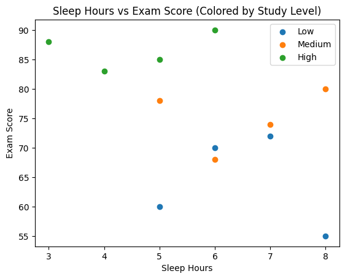

This scatter plot illustrates how exam scores vary with sleep hours, with colors representing study levels (low, medium, high).
Based on this, I would recommend encouraging students to increase both their study time and sleep hours to maximize exam performance.